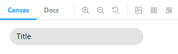
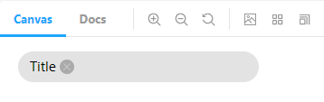
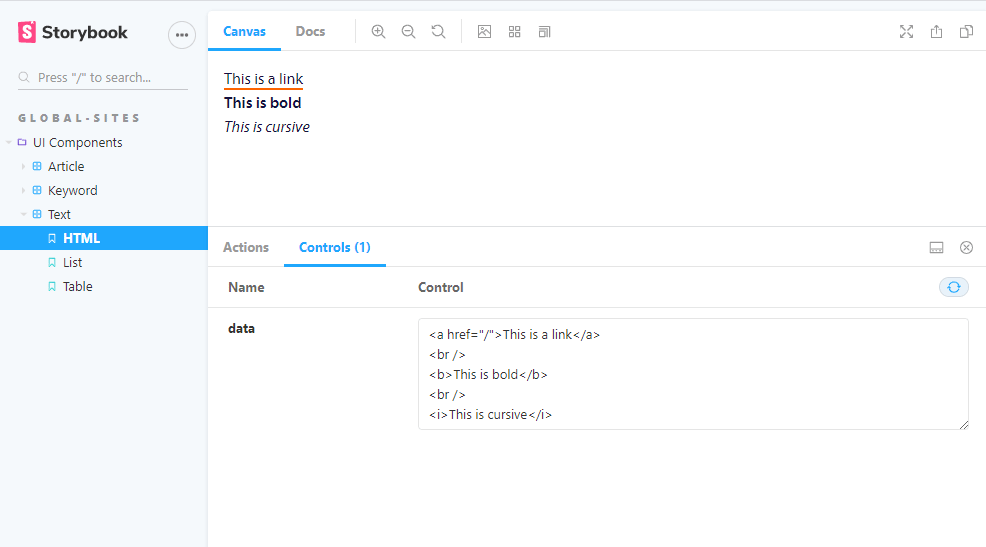
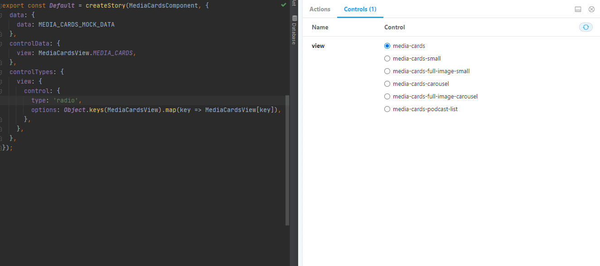

Developer feedback loop
Hack&&Hollandia
Stefan Kemp (Wayz)

Frank Walinga (Googlix)

Rachèl Heimbach (WhatAbout)
Average load times
| Run | Rebuild | Page load | |
| Global-sites | 1-2 min | 20-40 sec | 5+ sec |
| RBO | 3-5 min | 1-2 min | 5+ sec |

Why Storybook?
- Component isolation
- Component state visualization
- Component interaction
- Documentation (WIP)
- Etc...
Demo time
Global-sites

RBO

Average load times
| Run | Rebuild | Page load | |
| Global-sites | 1-2 min | 20-40 sec | 5+ sec |
| RBO | 3-5 min | 1-2 min | 5+ sec |
| Global-sites |
10-20 sec* | 1-2 sec | < 1 sec |
| RBO |
20-30 sec* | 2-4 sec | < 1 sec |
* Storybook needs to build an app only once to create static assets
How?
Storybook
- Component isolation
- Component state visualization
- Component interaction
Component isolation
A keyword in an article
Parent element:
.keywords {
display: flex;
...
}
A keyword in isolation


How does it work?
Booting components
// article.component.ts
@Component({
selector: 'senses-article',
templateUrl: './article.component.html',
styleUrls: ['./article.component.scss'],
})
export class ArticleComponent implements OnInit {
@Input()
data: Article;
@Input()
showHamburger: boolean = false;
@Output()
imageClick = new EventEmitter<Image | RichImage>();
// ...
}
// article.stories.ts
const metaInfo: Meta = {
title: 'Global-sites/UI Components/Article',
decorators: [
moduleMetadata({
declarations: [],
imports: [
CommonModule,
TranslateModule.forRoot(),
RouterModule.forRoot([]),
GlobalSitesUiComponentsModule,
],
schemas: [CUSTOM_ELEMENTS_SCHEMA],
providers: [
SensesTranslateService,
LogCollectorService,
{
provide: logCollectorIdToken,
useValue: 'storybook',
},
{ provide: APP_BASE_HREF, useValue: '/' },
}),
],
};
export default metaInfo;
export const Article = (): IStory => ({
component: ArticleComponent,
props: {
data: ARTICLE_MOCK_DATA,
isHamburger: false
},
});
Senses module helper
// article.stories.ts
const metaInfo: Meta = {
title: 'Global-sites/UI Components/Article',
decorators: [
moduleMetadata(
withSensesDefaults({
imports: [GlobalSitesUiComponentsModule],
})
),
],
};
export default metaInfo;
export const Article = (): IStory => ({
component: ArticleComponent,
props: {
data: ARTICLE_MOCK_DATA,
isHamburger: false,
},
});
export const withSensesDefaults = ({
imports = [],
providers = [],
schemas = [],
...metadata
}: Partial<NgModuleMetadata>): Partial<NgModuleMetadata> => ({
...metadata,
imports: [
...imports,
CommonModule,
TranslateModule.forRoot(),
RouterModule.forRoot([]),
],
providers: [
...providers,
{ provide: APP_BASE_HREF, useValue: '/' },
LogCollectorService,
{
provide: logCollectorIdToken,
useValue: 'storybook',
},
SensesTranslateService,
],
schemas: [...schemas, CUSTOM_ELEMENTS_SCHEMA],
});
Global-sites module helper
export const withSensesDefaults = ({
imports = [],
providers = [],
schemas = [],
...metadata
}: Partial<NgModuleMetadata>): Partial<NgModuleMetadata> => ({
...metadata,
imports: [
...imports,
CommonModule,
TranslateModule.forRoot(),
RouterModule.forRoot([]),
],
providers: [
...providers,
{ provide: APP_BASE_HREF, useValue: '/' },
LogCollectorService,
{
provide: logCollectorIdToken,
useValue: 'storybook',
},
SensesTranslateService,
],
schemas: [...schemas, CUSTOM_ELEMENTS_SCHEMA],
});
export const withGlobalSitesDefaults = ({
imports = [],
...metadata
}: Partial<NgModuleMetadata>): Partial<NgModuleMetadata> =>
withSensesDefaults({
...metadata,
imports: [...imports, GlobalSitesCommonModule],
});
Storybook
- Component isolation
- Component state visualization
- Component interaction
Text component
Text component
const metaInfo: Meta = {
title: 'Global-sites/UI Components/Text',
decorators: [
moduleMetadata(
withGlobalSitesDefaults({
declarations: [TextComponent],
})
),
],
};
export default metaInfo;
export const HTML = createStory(TextComponent, {
controlData: {
data: `<a href="/">This is a link</a>
<br />
<b>This is bold</b>
<br />
<i>This is cursive</i>`,
},
});
export const List = createStory(TextComponent, {
controlData: {
data: `<ul>
<li>Item 1</li>
<li>Item 2</li>
<li>Item 3</li>
<li>Item 4</li>
</ul>`,
},
});
export const Table = createStory(TextComponent, {
controlData: {
data: `<table>
<tr>
<td>Row 1 column 1</td>
<td>Row 1 column 2</td>
</tr>
<tr>
<td>Row 2 column 1</td>
<td>Row 2 column 2</td>
</tr>
</table>`,
},
});
Storybook
- Component isolation
- Component state visualization
- Component interaction
Easily change input
Easily configure input
Capture output
export const Article = createStory(ArticleComponent, {
data: {
data: ARTICLE_MOCK_DATA,
},
controlData: {
isHamburger: true,
},
controlTypes: {
imageClick: {
action: 'Image clicked',
},
},
});
And now the "bad news"
Storybook is supported by Nx 8+
and we're on 7 ;(
Custom setup
- Hacky script overrides "defaultProject" depending on which application is chosen
- Storybook requires middleware.js with custom config to proxy assets
- Translation files are not found (not investigated yet)
Current usage
Build Global-Sites
PROJECT=global-sites yarn build-storybook
Run lib stories within Global-Sites context
PROJECT=global-sites INCLUDE=global-sites-ui-components yarn storybook
Run specific lib stories within Global-Sites context
PROJECT=global-sites INCLUDE=global-sites-ui-components FILTER=article yarn storybook
But here's the good news
As soon as we upgrade to Nx 8+
yarn add --dev @nrwl/storybook
nx g @nrwl/angular:storybook-configuration <project-name>
nx run <project-name>:storybook